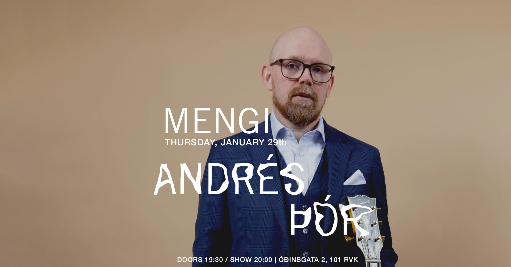
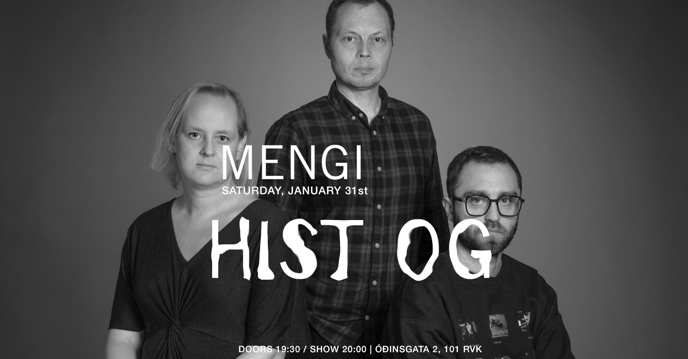
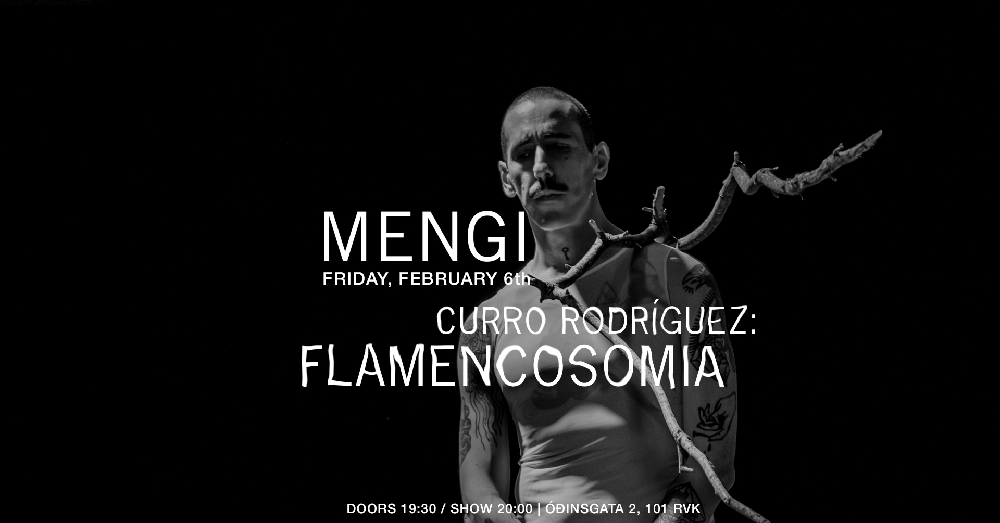
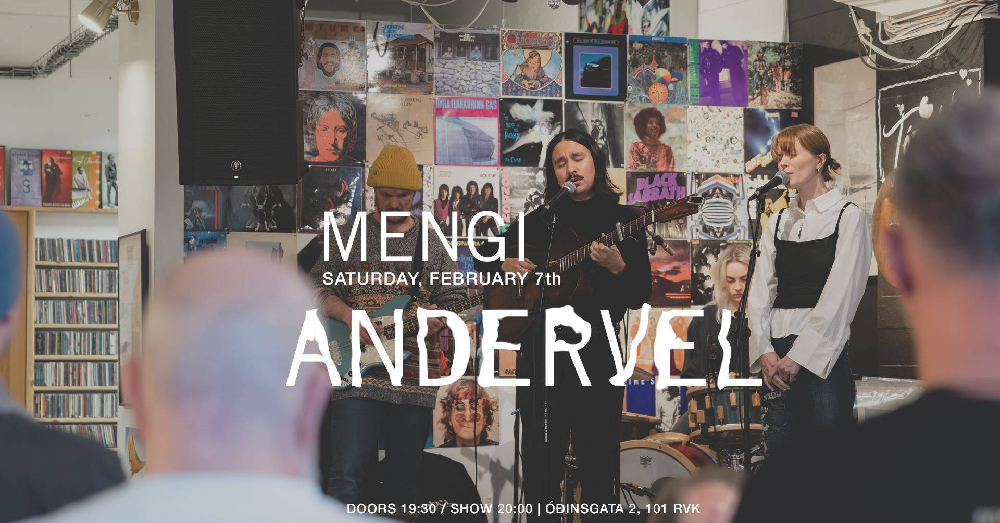
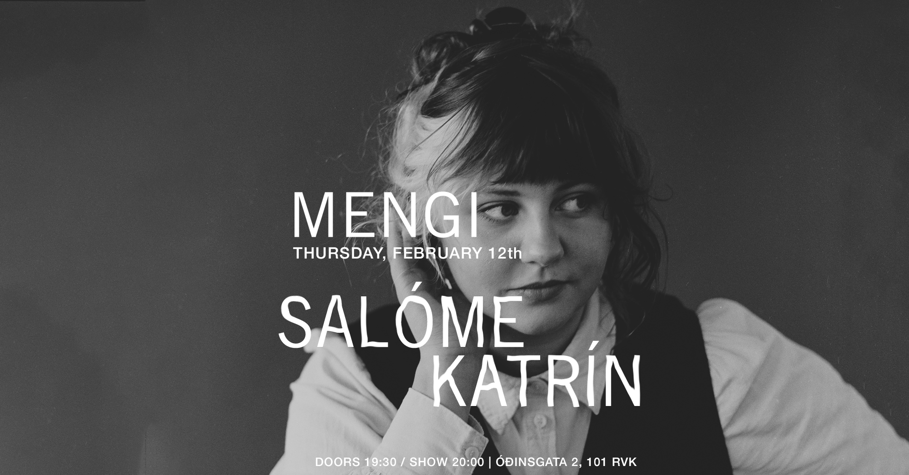

Upcoming Events
THU 29.01 Andrés Þór
Tickets Thursday, January 29th ANDRÉS ÞÓR: SOLO doors 19:30 / show 20:00 2500kr / 2000kr students Fimmtudaginn 29. Janúar kl. 20:00 mun gítarleikarinn Andrés Þór koma fram í Mengi með einleikstónleika. Á efniskránni mun bregða fyrir frumsömdum lögum eftir Andrés auk jazzstandarda og popplaga í útsetningum fyrir einleiks gítar. Á tónleikunum verður rík áhersla á hljómrænan textúr, spuna og nálægð. Þetta verður afslöppuð og hlý kvöldstund í nánu umhverfi þess mengis sem einleiksgítarinn býður uppá. Guitarist Andrés Þór will perform a repertoire of solo material at Mengi on January 29 at 20:00. The program features original compositions alongside jazz standards and selected pop songs, arranged for solo guitar. The performance focuses on harmonic texture and improvisation in an intimate and minimal setting. It will be an atmospheric and warm evening in the intimate setting that the solo guitar has to offer. Andrés Thor is an Icelandic jazz guitarist and composer known for his warm tone, melodic sensitivity, and deep-rooted sense of form and freedom. With a career spanning more than two decades, Andrés has established himself as a distinctive voice in the Nordic jazz scene, blending modern jazz expression with lyrical Scandinavian aesthetics. His latest album Hereby (Losen Records, 2022) features nine original compositions in a stripped-down trio format with double bassist Nico Moreaux and drummer Magnús Trygvason Elíassen. The album highlights the intimacy and conversational nature of the guitar trio, and reflects Andrés’s long-standing fascination with space, phrasing, and interplay. A new trio album is currently in the works, scheduled for release in early 2026. Rooted in both jazz tradition and his early love for rock music, Andrés’s sound draws from a wide range of influences—from the spaciousness of Nordic jazz to the expressive force of classic guitar-led ensembles. His playing is both lyrical and grounded, with a quiet intensity that reveals itself over time. Based in Iceland, Andrés has performed extensively across Europe and the U.S., appearing at jazz festivals, clubs, and concert halls. He has released seven albums under his own name and collaborated on numerous projects, including with groups such as Wijnen, Winter & Thor, ASA Trio, ASTRA, KuVenda and the Andreas Dreier Quartet. In addition to performing and composing, Andrés is active as an educator and has taught guitar and ensemble playing in various music schools and workshops. He has received several Icelandic Music Awards, most recently as Jazz Performer of the Year in 2024.
SAT 31.01 Hist og
Tickets Saturday, January 31st HIST OG doors 19:30 / show 20:00 2500kr / 2000kr students / pay what u can Founded in 2017 to distil a murky blend of jazz and electronic music, hist og is a trio featuring Eiríkur Orri Ólafsson on trumpet and electronics, Róberta Andersen on guitar, bass and synth, and Magnús Trygvason Eliassen on drums and percussion. Through the lens of their shared musical language, they explore a Day-Glo lit ruminative world of improvisation, jazz and electronic music. Hist og has released three albums, days of tundra (2019), hits of (2020), and holy ghost of (2023). all three records have received wide praise, harvesting six nominations to the Icelandic Music Awards, a seat on the venerated Kraumur list in 2019 and 2020. Days of Tundra was named "improv of the year" by Morgunblaðið in 2019. Music critic Arnar Eggert Thoroddsen wrote "smashing stuff … every song is rigidly stamped by the seal of this super-trio." Kevin Whitlock of Jazzwise wrote this about their 2024 Reykjavík Jazz Festival appearance: "they are at once thunderous, producing huge walls of sound, and spacey; while also laying down serious grooves. […] They'd go down a storm at a venue like London's Café OTO – let's hope they visit the UK soon." The members of hist og have worked with countless outfits over the years, such as múm, Sin Fang, Amiina, Sigur Rós, Kira Kira, Seabear and others. they have also collaborated with supreme jazz entities such as ADHD, Hilmar Jensson, Skúli Sverrisson and Mógil. // Tríóið hist og var stofnað í lok árs 2017 til þess að rugla saman reitum raf-og djasstónlistar. Tríóið skipa Eiríkur Orri Ólafsson, sem leikur á trompet, trommuheila og hljómboð, Róberta Andersen á gítar, bassa og hljómborð og Magnús Trygvason Eliassen á trommur og slagverk. Meðlimir tríósins beina stækkunarglerinu að sameiginlegum snertifleti sínum, með innhverfri, úthverfri og slagþungri blöndu af djass, raf-, og spunatónlist sem kemur víða við. hist og á að baki þrjár plötur, Days of Tundra (2019), hits of (2020), og holy ghost of (2023). Allar hlutu þær mikið lof og hefur hljómsveitin landað þremur tilnefningum til Íslensku Tónlistarverðlaunanna í djassflokki bæði árin, sem og sæti á Kraumslistanum 2019 og "Spuni Ársins" sama ár hjá Morgunblaðinu. Um hits of skrifaði Arnar Eggert Thoroddsen hjá Morgunblaðinu ma. "Hörkustöff … stimpill þessa ofurtríós kirfilega á öllum smíðum." Allar plöturnar hafa hlotið sæti á Kraumslistanum. Breska tímaritið Jazzwise hafði þetta að segja um tónleika þeirra á Jazzhátíð í ágúst síðastliðnum: "they are at once thunderous, producing huge walls of sound, and spacey; while also laying down serious grooves. […] They'd go down a storm at a venue like London's Café OTO – let's hope they visit the UK soon." Meðlimir hist og hafa starfað um árabil með hinum ýmsustu hljómsveitum, svo sem múm, amiinu og Sin Fang, Sigur Rós, Kiru Kiru, Benna Hemm Hemm og Seabear, ásamt ótal samstarfsverkefna á sviði djasstónlistar með ADHD, Hilmari Jenssyni, Skúla Sverrissyni og Mógil.
FRI 06.02 Curro Rodríguez: Flamencosomia
Tickets Friday, February 6th FLAMENCOSOMIA doors 19:30 / show 20:00 2500kr / 2000kr students / pay what u can FLAMENCOSOMIA is a space of experimentation between flamenco and the body. The performance approaches flamenco not as a musical style or a form of representation, but as a bodily condition: a somatic state that organizes breath, voice, tension, and presence. The voice does not appear as an expressive vehicle, but as physical matter. Singing becomes an act of giving body to the voice, allowing sound to act upon the body, to transform it, to pass through it and structure it from within. FLAMENCOSOMIA does not propose an interpretation of flamenco, but its embodiment: a body in which flamenco is not performed, but happens. Curro Rodriguez with The Bodies Curro Rodríguez is a visual artist and experimental musician whose practice bridges traditional flamenco with radical sound exploration. His performances take the form of rituals, where sound, voice, and body create experiences of intense emotional impact. Through the fusion of flamenco heritage and innovation, Curro develops an extreme physical and vocal practice, pushing the limits of voice and body in a process of catharsis, endurance, and reinvention of “lo jondo” (the most intense, tragic, and visceral dimension of flamenco, associated with the expression of pain, lament, resistance, and emotional truth). For this occasion, Curro invites different artists into a collective exploration of corporeality. These invited presences emerge as The Bodies.
SAT 07.02 Andervel
Tickets Saturday, February 7th ANDERVEL doors 19:30 / show 20:00 2500kr / 2000kr students / pay what u can Earnest, intimate, heartfelt, delicate: Andervel is the music project of singer-songwriter and multi-instrumentalist José Luis Anderson. Born and raised in Mexico, Anderson creates a unique brand of folk music, seen through the lens of multicultural identity. Andervel's work is defined by a timeless, classically-trained voice and carefully crafted lyrics moving seamlessly between Spanish, Icelandic, and English. On his latest single ‘Ég finn’, Mexican-born, Reykjavík-based artist Andervel continues his poetic exploration of identity, belonging, and cultural adaptation. A tender and expansive folk song, ‘Ég finn’ captures the space between two homelands - where the warmth of Mexico meets the cool, introspective landscapes of Iceland. Andervel performs as a band, joined by Sigurlaug Thorarensen, Sólrún Mjöll Kjartansdóttir and Sakaris Emil Joensen. Links: New single: Ég Finn: http://andervel.lnk.to/EgFinn Instagram: https://www.instagram.com/andervels More: https://linktr.ee/Andervel Website: www.andervel.com
THU 12.02 Salóme Katrín
Tickets Thursday, February 12th SALÓME KATRÍN doors 19:30 / show 20:00 2500kr / 2000kr students / pay what u can Íslenska: Tónlistarkonan Salóme Katrín vinnur að sinni fyrstu plötu í fullri lengd um þessar mundir. Þrátt fyrir að Salóme hafi verið virk í íslensku tónlistarlandslagi síðustu misseri, er marga farið að ílengja eftir frekari útgáfum frá henni, enda eru fimm ár liðin frá því að hún gaf út stuttskífuna Water. Því er sérlega gaman að segja frá því að biðin er senn á enda! Salóme Katrín hefur sankað að sér einvalaliði og er nú á leiðinni í hljóðver að festa tónlistina á band. Áður en sú vegferð gefst hyggst Salóme leika úrval síns nýja efnis á hljómleikum í Mengi ásamt góðum félögum. English: Musician Salóme Katrín is currently working on her first full-length album. Although she has been active in the Icelandic music scene, many have been eagerly awaiting more releases from her, as five years have passed since she released her debut EP, Water. It is therefore especially exciting to say that the wait is nearly over! Salóme Katrín has gathered some of her favourite of musicans and is now heading into the studio to record the music. Before that journey, they plan to perform a selection of her new material at a concert at Mengi. Hljómsveitina skipa: Ingibjörg Elsa Turchi Svanhildur Lóa Bergsveinsdóttir Rakel Sigurðardóttir Tumi Torfason Tumi Árnason Hannes Arason Björgvin Ragnar Hjálmarsson

THU 26.02 Sölvi Kolbeins Trio
Tickets Thursday, February 26th SÖLVI KOLBEINS TRIO doors 19:30 / show 20:00 2500kr / 2000kr students / pay what u can Tríó saxófónleikarans Sölva Kolbeinssonar leikur efni af plötunni Collage sem kom út hjá Reykjavík Record Shop í nóvember 2025. Collage er fyrsta hljómplata Sölva eingöngu með eigin tónsmíðum. Þetta er tilraunakenndur djass, innblásinn af dvöl hans í Berlín og Kaupmannahöfn ásamt því að flytja aftur heim til Íslands. Lögin eru ólík og tákna mismunandi augnablik, myndir, hver og ein með eigin stemningu og sterk karaktereinkenni. Saman skapa myndirnar heild og þaðan kemur titill plötunnar. Ásamt Sölva koma fram gítarleikarinn Hilmar Jensson og slagverksleikarinn Magnús Trygvason Eliassen. Tríóið varð til út frá dúói Sölva og Magnúsar en þeir voru paraðir saman við Hilmar á Djasshátíð 2020 og spiluðu þar stórskemmtilega tónleika. Til að byrja með spiluðu þeir sín uppáhalds lög eftir aðra en fókusinn færðist fljótlega yfir á tónsmíðar Sölva. Eftir að spila fleiri tónleika og prófa allskonar héldu þeir íí hljóðver desember 2024. Nú er komin plata og meira á leiðinni! Sölvi Kolbeinsson (f. 1996) er saxófónleikari og tónskáld. Hann stundaði klassískt saxófónnám í Tónmenntaskóla Reykjavíkur og Tónlistarskólanum í Reykjavík en rytmískt nám í Tónlistarskóla FÍH og Jazz-Institut Berlin þaðan sem hann lauk BA námi sumarið 2019. Hann er meðlimur í mörgum ólíkum hópum á Íslandi og víðar. Þar má nefna dúó með trommaranum Magnúsi Trygvasyni Eliassen, Mánudjass, Camus quartet, Ari Árelíus, La bomba, Guiding star orchestra, Hamamelidae, Volcano bjorn og Windisch quartet. Sölvi hefur spilað á djasshátíðum í Kanada, Þýskalandi, Finnlandi, Noregi, Danmörku og á Íslandi auk þess að hafa komið fram í fjölda annarra landa. Sölvi hefur gefið út þrjár plötur eingöngu með eigin tónsmíðum: Collage (2025), Live in Berlin (2022) og August (2021). Hann hlaut Íslensku tónlistarverðlaunin árið 2016 sem bjartasta vonin í flokknum Djass- og blústónlist. Sölvi kennir á saxófón og klarinett í Skólahljómsveit Grafarvogs og Tónskóla Sigursveins síðan haustið 2023. ------- Icelandic saxophonist Sölvi Kolbeinsson plays material from his album Collage, released by Reykjavík Record Shop in November 2025. Collage is Sölvi's first album solely with his own compositions. It is experimental jazz, inspired by his stay in Berlin and Copenhagen as well as moving back home to Iceland. The songs are variable and represent different moments, images, each with its own atmosphere and strong character traits. Together, the images create a whole and that leads us to the album title. Along with Sölvi are guitarist Hilmar Jensson and percussionist Magnús Trygvason Eliassen. The trio is an extension of Sölvi ́s and Magnús ́s duo. They were paired with Hilmar at the 2020 Reykjavík Jazz Festival and played a great concert there. At first, they played their favourite songs by others, but the focus soon shifted to Sölvi's compositions. After playing more concerts and rehearsing, they went into the studio in December 2024. Now there is an album out and more on the way! Sölvi Kolbeinsson (b. 1996) is a Icelandic saxophonist and composer. He studied classical saxophone at the Reykjavík School of Music and rhythmic studies at the FÍH School of Music and the Jazz-Institut Berlin, from where he graduated with a BA in the summer of 2019. He is a member of many different groups in Iceland and beyond. These include a duo with drummer Magnús Trygvason Eliassen, Mánudjass, Camus quartet, Ari Árelíus, La bomba, Guiding star orchestra, Hamamelidae, Volcano bjorn and Windisch quartet. Sölvi has played at jazz festivals in Canada, Germany, Finland, Norway, Denmark and Iceland, as well as having performed in many other countries. Sölvi has released three albums of his own compositions: Collage (2025), Live in Berlin (2022) and August (2021). He received the Icelandic Music Award in 2016 as the brightest hope in the Jazz and Blues category. Sölvi has been teaching saxophone and clarinet at the Grafarvogur School Orchestra and Sigursveinn Music School since 2023.

SAT 28.02 Amor Vincit Omnia: Extended Babe Album Release
Tickets Saturday, February 28th AMOR VINCIT OMNIA: EXTENDED BABE ALBUM RELEASE doors 19:30 / show 20:00 2500kr / 2000kr students / pay what u can Amor Vincit Omnia invites all to their release concerts where the new EP extended babe will be premiered along with various instrumentalists. The EP has been in the making for a long time and we are super excited to share it with you in all its glory. Amor Vincit Omnia býður til útgáfutónleika þar sem nýja stuttskífa þeirra extended babe verður frumflutt ásamt hinum og þessum hljóðfæraleikurum. Platan hefur verið í vinnslu í þó nokkurn tíma og erum við spennt að deila henni með ykkur í heild sinni. ------ Amor Vincit Omnia is a pop-project born in 2023. Amor’s music is best described as playful and eccentric. They are inspired by people who push the boundaries of pop music, and their sounds are inspired by everything between Skrillex and Steve Reich. In 2024, Amor released their debut EP, brb babe, earning them Reykjavik Grapevine’s ‘One to Watch’ and the Kraumur Awards. In February they are releasing their second EP, extended babe, a heartfelt collection of songs made for the sole purpose of making people feel worse about their love life. Amor Vincit Omnia er popp hljómsveit skipuð af þeim Erlu Hlín og Baldri. Tónlistinni þeirra má lýsa sem leikandi og spennandi og dregur innblástur frá framsæknu tónlistarfólki, allt á milli Skrillex og Steve Reich. Fyrsta stuttskífa Amor kom út 2024 og fyrir hana fengu þau kraumsverðlaun og unnu í þokkabót titilinn ‘One to Watch’ hjá Reykjavik Grapevine. Í febrúar ætla þau að gefa út splunkunýja stuttskífu, extended babe, en það er samansafn af lögum sem gerð eru til að láta fólki líða verr og drukkna í harmi ástarinnar.